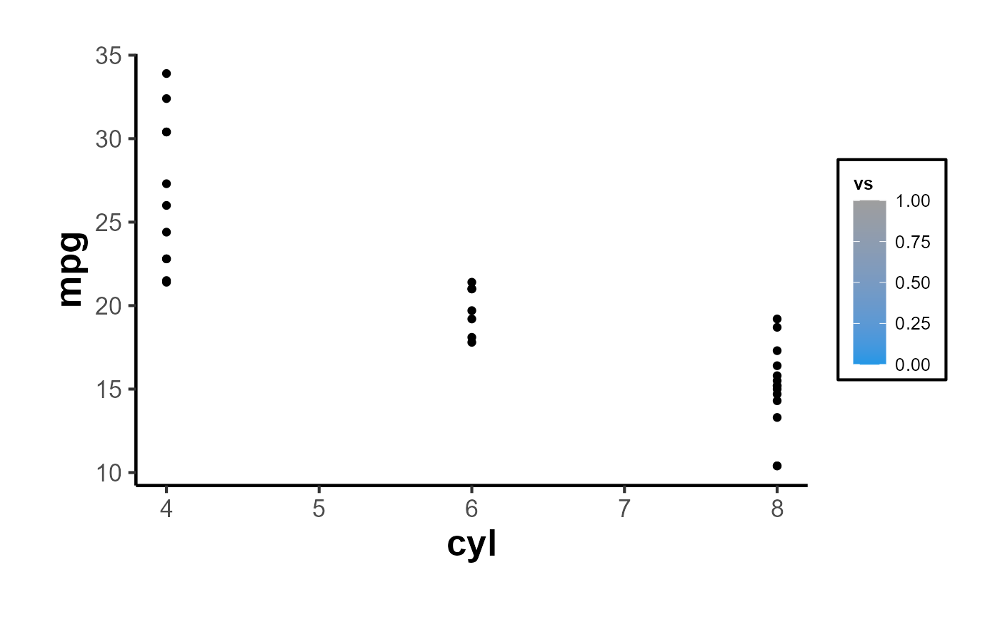
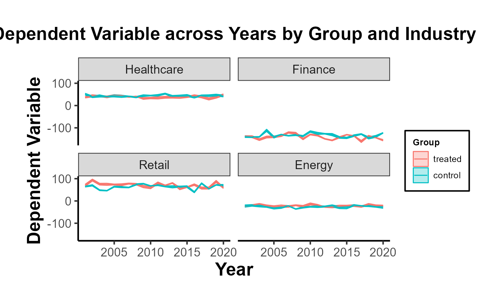

Introduction to CausalVerse
Mike Nguyen
2024-05-13
a_introduction.Rmd
library(causalverse)
library(ggplot2)
library(tidyverse)
#> ── Attaching core tidyverse packages ──────────────────────── tidyverse 2.0.0 ──
#> ✔ dplyr 1.1.2 ✔ readr 2.1.4
#> ✔ forcats 1.0.0 ✔ stringr 1.5.1
#> ✔ lubridate 1.9.2 ✔ tibble 3.2.1
#> ✔ purrr 1.0.2 ✔ tidyr 1.3.0
#> ── Conflicts ────────────────────────────────────────── tidyverse_conflicts() ──
#> ✖ dplyr::filter() masks stats::filter()
#> ✖ dplyr::lag() masks stats::lag()
#> ℹ Use the conflicted package (<http://conflicted.r-lib.org/>) to force all conflicts to become errors
Introduction to the causalverse
Package
Welcome to the causalverse package - a
dedicated toolkit tailored for researchers embarking on causal inference
analyses. Our primary mission is to simplify and enhance the research
process by offering robust tools specifically designed for various
causal inference methodologies.
Vignettes Overview
To enable a comprehensive understanding of each causal inference
method, causalverse boasts a series of
in-depth vignettes. Each vignette offers a blend of theoretical
background and hands-on demonstrations, ensuring you have both the
knowledge and skills to implement each method effectively.
Here’s a snapshot of our method-specific vignettes:
Randomized Control Trials (RCT): Although
causalverseprimarily focuses on quasi-experimental methods using observational data, we recognize the importance of experimental methods in causal research. Therctvignette presents a detailed overview of Randomized Control Trials, the gold standard of experimental research.Regression Discontinuity (RD)
Synthetic Difference-in-differences (SynthDID)
Difference in Differences (DID)
Synthetic Controls (SC)
Instrumental Variables (IV)
Event Studies (EV)
A Note on Methodologies
The majority of methods covered in
causalverse pertain to quasi-experimental
approaches, typically applied to observational data. These methods are
instrumental in scenarios where running randomized experiments might be
infeasible, unethical, or costly. However, we also touch upon
experimental methods, specifically RCTs, recognizing their unparalleled
significance in establishing causal relationships.
Getting Started
As you embark on your journey with
causalverse, we recommend starting with
this introductory vignette to familiarize yourself with the package’s
architecture and offerings. Then, delve into the method-specific
vignettes that align with your research objectives or peruse them all
for a holistic understanding.
I hope this provides a clearer and professional introduction for your vignette. If you have any additional inputs or refinements, please let me know!
Reporting
In this section, the focus is primarily on reporting rather than causal inference. Given that my primary domain of interest is marketing, I adhere to the American Marketing Association’s style guidelines for presentation. As a result, my plots typically align with the AMA theme. However, users always retain the flexibility to modify the theme as needed.
The ama_theme function is designed to
provide a custom theme for ggplot2 plots that align with the styling
guidelines of the American Marketing Association.
Figures
This is a direct quote from AMA website (emphasis is mine)
Figures should be placed within the text rather than at the end of the document.
Figures should be numbered consecutively in the order in which they are first mentioned in the text. The term “figure” refers to a variety of material, including line drawings, maps, charts, graphs, diagrams, photos, and screenshots, among others.
Figures should have titles that reflect the take-away. For example, “Factors That Impact Ad Recall” or “Inattention Can Increase Brand Switching” are more effective than “Study 1: Results.”
Use Arial font in figures whenever possible.
For graphs, label both vertical and horizontal axes.
Axis labels in graphs should use “Headline-Style Capitalization.”
Legends in graphs should use “Sentence-style capitalization.”
All bar graphs should include error bars where applicable.
Place all calibration tick marks as well as the values outside of the axis lines.
Refer to figures in text by number (see Figure 1). Avoid using “above” or “below.”
The cost of color printing is borne by the authors. If you do not intend to pay for color printing for a figure that contains color, then it will automatically appear in grayscale in print and in color online.
If you submit artwork in color and do not intend to pay for color printing, please make sure that the colors you use will work well when converted to grayscale, and avoid referring to color in the text (e.g., avoid “the red line in Figure 1”). Use contrasting colors with different tones (i.e., dark blue and dark red will convert into almost identical shades of gray). Don’t use light shades or colors such as yellow against a light background.
When using color in figures, avoid using color combinations that could be difficult for people with color vision deficiency to distinguish, especially red-green and blue-purple. Many apps are available online (search for “colorblindness simulator” or similar terms) to provide guidance on likely issues. Use symbols, words, shading, etc. instead of color to distinguish parts of a figure when needed. Avoid wording such as “the red line in Figure 1.”
When preparing grayscale figures, use gray levels between 20% and 80%, with at least 20% difference between the levels of gray. Whenever possible, avoid using patterns of hatching instead of grays to differentiate between areas of a figure. Grayscale files should not contain any color objects.
When reporting the results from an experiment in a figure:
Use the full scale range on the y-axis (e.g., 1–7).
Include error bars and specify in the figure notes what they represent (e.g., ±1 SE).
Include the means.
Include significance levels with asterisks.
Upon acceptance: Submit original Excel or PowerPoint files for all figures, not just a graphic pasted into Excel, PowerPoint, or Word. This is so the production staff can edit the content. We also accept PDF, EPS, or PostScript files made from the application that created the original figure if it was not created in Word or PowerPoint. Specifically, please export (rather than save) the file from the original application. Avoid bitmap or TIFF files. However, when these files must be used—as in photographs or screenshots—submit print-quality graphics. For a photograph or screenshot, this requires a resolution of at least 300 ppi/dpi. For a line drawing or chart, the resolution should be at least 800 ppi/dpi.
Functions Overview
-
ama_theme(): Provides the primary AMA plot theme. -
ama_labs(): Customizes the labels in AMA style. -
ama_scale_fill(): Provides a color or grayscale fill based on the AMA style. -
ama_scale_color(): Provides a color or grayscale color aesthetic based on the AMA style.
Let’s start by plotting a simple scatter plot:
data(mtcars)
p <- ggplot(mtcars, aes(x = mpg, y = wt)) +
geom_point() +
ama_theme()
p
Using the ama_labs() function, you can ensure the
capitalization and formatting of your plot labels match the AMA
style:
p + ama_labs(
x = "miles per gallon",
y = "weight",
title = "mpg vs weight in mtcars dataset",
subtitle = "a scatter plot representation",
caption = "source: mtcars dataset"
)Fill Scales
For plots that use a fill aesthetic, such as bar plots or histograms,
you can apply the ama_scale_fill():
p_fill <-
ggplot(mtcars, aes(y = mpg, x = cyl, fill = vs)) +
geom_point() +
ama_theme() +
ama_scale_fill(use_color = F)
p_fill
ggplot(mtcars, aes(y = mpg, x = cyl, fill = vs)) +
geom_point() +
ama_theme() +
ama_scale_fill(use_color = T)
Color Scales
Similarly, for plots using a color aesthetic, you can apply the
ama_scale_color():
p_color <- ggplot(mtcars, aes(x = mpg, y = wt, color = hp)) +
geom_point() +
ama_theme() +
ama_scale_color(use_color = TRUE, palette_name = "OkabeIto")
p_color
# recommend
p_grey <- ggplot(mtcars, aes(x = mpg, y = wt, color = hp)) +
geom_point() +
ama_theme() +
ama_scale_color(use_color = F)
p_greyIn short,
ggplot(mtcars, aes(x = mpg, y = cyl)) +
geom_point(aes(color = gear, fill = gear), size = 4, shape = 21) +
ama_labs(
x = "x label",
y = "y label",
title = "Plot Title",
subtitle = "subtitle",
caption = "This is my caption/note",
fill = "legend title",
color = "legend title"
) +
ama_scale_fill() +
ama_scale_color() +
ama_theme()Moreover, the function can inherit all parameters from the
theme function, allowing even further customization:
ggplot(mtcars, aes(x = mpg, y = wt)) +
geom_point() +
ama_theme(panel.spacing = unit(1, "lines"))
Export Figures
p_grey |>
causalverse::ama_export_fig(
filename = "p_color",
filepath = file.path(getwd(), "export")
)Tables
Tables should be placed within the text rather than at the end of the document.
Tables should be numbered consecutively in the order in which they are first mentioned in the text.
Tables should have titles that reflect the take-away. For example, “Factors That Impact Ad Recall” or “Inattention Can Increase Brand Switching” are more effective than “Study 1: Results.”
Designate units (e.g., %, $, n) in column headings.
Refer to tables in text by number (see Table 1). Avoid using “above” or “below.”
Asterisks or notes cued by lowercase superscript letters appear at the bottom of the table below the rule. Asterisks are used for p-values, and letters are used for data-specific information. Other descriptive information should be labeled as “Notes:” and placed after the letters.
Tables with text only should be treated in the same manner as tables with numbers (formatted as tables with rows, columns, and individual cells).
Make sure the necessary measures of statistical significance are reported with the table.
Do not insert tables in the Word file as pictures. All tables should be editable in Word.
Export Tables
mtcars |>
nice_tab() |>
head()
#> mpg cyl disp hp drat wt qsec vs am gear carb
#> 1 21.0 6 160 110 3.90 2.62 16.46 0 1 4 4
#> 2 21.0 6 160 110 3.90 2.88 17.02 0 1 4 4
#> 3 22.8 4 108 93 3.85 2.32 18.61 1 1 4 1
#> 4 21.4 6 258 110 3.08 3.21 19.44 1 0 3 1
#> 5 18.7 8 360 175 3.15 3.44 17.02 0 0 3 2
#> 6 18.1 6 225 105 2.76 3.46 20.22 1 0 3 1
mtcars[1:5, 1:5] |>
nice_tab() |>
ama_export_tab(
filename = "test_tab",
filepath = file.path(getwd(), "export")
)Model Free Evidence
Why Visualize Model-Free Evidence?
Often in research, especially in econometrics, public policy, and social sciences, we aim to understand the impact of an intervention or treatment. Typically, a group receiving the treatment (the “treated” group) is compared against a group not receiving it (the “control” group). One of the crucial steps in this analysis is visualizing the trends in both groups over time. Such visualizations, especially when they are presented across different groupings (e.g., industries), provide what is sometimes termed “model-free evidence”. This means the evidence is not reliant on the assumptions of a particular statistical model, making it a robust way to initially understand the data before diving into intricate model-based analyses.
Immediate Visual Feedback: Before we fit complex models to our data, it’s beneficial to see the raw trends. Often, the naked eye can capture nuances that might be missed or misinterpreted by statistical models.
Simplicity for Broader Audience: Not everyone in your audience might be comfortable with intricate statistical details. Simple plots showcasing trends can be understood by a broader audience.
Highlighting Discrepancies: If there are stark differences in trends between the treated and control groups, or if these trends vary across categories like industries, they become immediately evident.
Building Trust in Subsequent Analysis: When we later present model-based results, having first shown the raw trends ensures the audience that the models aren’t capturing spurious patterns.
Using plot_trends_across_group for Model-Free
Evidence
The function plot_trends_across_groupis
designed to help researchers visualize these trends effortlessly. Users
can input their dataset, specify the x-axis, y-axis, grouping variable
(like treated/control), and a secondary grouping variable (like
industries).
Here’s an example using a fictitious dataset:
# Set random seed for reproducibility
set.seed(123)
# Create the fictitious dataset
n_years <- 20
industries <- c(
# "Tech",
"Healthcare", "Finance", "Retail", "Energy")
data <- expand.grid(industry = industries,
year = 2001:2020,
group = c("treated", "control")) %>%
group_by(industry, year, group) %>%
mutate(
dependent_variable = case_when(
# industry == "Tech" & group == "treated" ~ rnorm(1, 50 + year, 10),
# industry == "Tech" & group == "control" ~ rnorm(1, 40 + year, 10),
industry == "Healthcare" & group == "treated" ~ rnorm(1, 40, 5),
industry == "Healthcare" & group == "control" ~ rnorm(1, 45, 5),
industry == "Finance" & group == "treated" ~ rnorm(1, 60 - year/10, 10),
industry == "Finance" & group == "control" ~ rnorm(1, 65 - year/10, 10),
industry == "Retail" & group == "treated" ~ rnorm(1, 70, 10),
industry == "Retail" & group == "control" ~ rnorm(1, 65, 10),
industry == "Energy" & group == "treated" ~ rnorm(1, 80 - year/20, 5),
industry == "Energy" & group == "control" ~ rnorm(1, 75 - year/20, 5),
TRUE ~ rnorm(1, 50, 10)
),
se = runif(n(), 1, 5) # random standard errors between 1 and 5
)
# Create panel of line plots with grid layout and uncertainty
data %>%
# filter(industry != "Tech") |>
ggplot(aes(x = year, y = dependent_variable, color = group)) +
geom_ribbon(aes(ymin = dependent_variable - se,
ymax = dependent_variable + se, fill = group), alpha = 0.3) +
geom_line() +
facet_wrap(~industry, ncol = 2) +
theme_minimal() +
labs(title = "Dependent Variable across Years by Group and Industry",
x = "Year",
y = "Dependent Variable",
color = "Group",
fill = "Group") +
causalverse::ama_theme()
# Example usage
plot <- plot_trends_across_group(
data = data,
x_var = "year",
y_var = "dependent_variable",
grouping_var = "group",
facet_var = "industry",
# se = "se",
include_legend = T,
title = "My Custom Title"
)
print(plot)Other Functions
Mediation Analysis
result <- med_ind(a = 0.5, b = 0.7, var_a = 0.04, var_b = 0.05, cov_ab = 0.01)
result$plot
#> `stat_bin()` using `bins = 30`. Pick better value with `binwidth`.